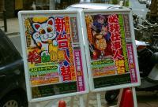
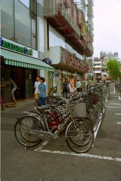
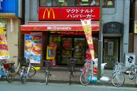
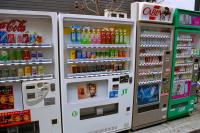

|
Jeudi 2 août
Après deux faux départs pour cause d’orientaion défaillante, on se retrouve
dans le quartier d’Ueno et du parc Onshi. Tout ce qu’on voit nous surprend
(et pas seulement le nom du parc…), tout ce qu’on sent et entend aussi. Toujours
pas de bruit, nulle part. Même les camions sont silencieux et personne ne klaxonne.
Seule l’ambulance fait hurler sa sirène et annonce au haut-parleur sa direction
“poussez-vous les gens, je vais par là”. Pas d’odeur non plus, ici on roule
propre! Propres sont aussi les rues, impeccables. Et toujours pas de gratte-ciles.
Des maisons et des immeubles mais de taille tout a fait banale. De grandes avenues
à trois ou quatre voies par sens de circulation, vides ou presque! Par contre
plein de piétons en cravates et des cyclistes qui se partagent le trottoir à
petits coups étouffés de sonnette. On croirait presque se trouver dans un lieu
anesthésié tant c’est silencieux. Ueno est un quartier très agréable. Nombreuses
ruelles où s’alignent les maisonnettes, lac littéralement recouvert de lotus,
temples et… distributeurs de tout,m partout, surtout de boissons vitaminées
mais aussi cigarettes et autres. Dans les supermarchés, sushis sous vide… miam
c’est bon. Et puis on voit un sans-abris, puis 2, 4, 10, 20, 30. Ils vivent
ça et là, regroupés, sur des cartons, dans des cabanes, sur des bâches ou des
couvertures de survie, avec leur valise à roulettes, leurs casseroles. Le plus
souvent, ces hommes (on n’a pas vu de femmes) sont en costumes, chemise, souliers
cirés. Comment ont-ils atterris là? Crise? Révolte? En tous cas, aucun ne semble
faire la manche.
Après Ueno, direction Asakusa. Traditionnel par ci, moderne des années
80 par là. Comme tout ce qu’on a vu de Tokyo jusque là. Avec des quartiers hyper
animés. On voit surtout des hommes en cravate, de 25 à 65 ans, et quelques femmes
avec de jeunes enfants sur leur porte bagage. Quelques 18-25 ans mais très très
peu d’enfants et d’ados. La mode est à la rébellion et les cheveux jaunes sont
de rigueur!
Métro (très cher, 18 FF) pour Shinjuku. Et là, nous sommes récompensés
et nos clichés se vérifient! Des gratte-ciles! Enfin des gratte-ciles! Une poignée,
peut-être une dizaine, regroupés comme pour se soutenir. On monte au 45ème étage
de l’un d’eux. 55 secondes pour se retrouver à 202 mètres! Ca bouche les oreilles.
La vue est superbe, tout autour, Tokyo s’étale à nos pieds.
En flânant, on passe devant des restos où les gens sont assis autour d’un comptoir
circulaire au centre duquel les cuistots s’affairent. Sur le comptoir, devant
le nez des convices, un tapis roulant trimballe des assietes pleines de choses
appétissantes… Si ça ce n’est pas de la tentation!
Le soir, tout s’illumine. Ho, c’est beau! On remonte au gratte-ciel pour voir
la ville s’illuminer puis on flâne dans les rues et ruelles éclairées par les
enseignes géantes clignotantes. Partout l’oeil est accroché par la pub. On s’en
fout, on ne comprend pas le japonais. Pour nous, c’est juste joli. Une ruelle
bondée de minuscules restos, nous sommes au quartier des hommes d’affaires.
Les restos sont en fait des gargottes. Même pas. Il s’agit d’un pièce de 2,5
mètres de large sur 5 de long. Un banc et une table en font la longueur. D’un
côté, les clients s’assoient, de l’autre le ou les cuistots se démènent. Au
menu, soupes diverse à base de nouilles, nouilles sans soupe, viandes grillées
sous le nez des convives, poissons, etc. A 21h00, on se rasasie d’une soupe
en compagnie des hommes en cravate qui viennent dîner en sortant du boulot!
380 yens pour cet énorme bol, qui ose dire que Tokyo c’est cher! (22 FF environ).
Le seul à faire la manche, c’est un irlandais en kilt qui joue de la cornemuse!
Et puis il faut bien rentrer, on perd notre latin à essayer de comprendre le
fonctionnement du métro. Ces fous de japonais sortent du boulot à 21h00! Un
cliché de plus qui se vérifie. Le métro est plein. Pas plein à craquer mais
on voyage debout quand meme la moitié du trajet. A l’aise certes, mais sur nos
pieds fatigués tout de même.
On retrouve finalement nos petits lits japonais douillets. Ce sont des matelas
super moelleux entassés par terre, trois les uns sur les autres et recouverts
d’une couette légère, légère… Et suffisamment chaude pour nosu permettre de
laisser la clim en marche toute la nuit (de toute façon, on n’a pas trouvé comment
l’éteindre). Ha, la fraîcheur! On s’enfonce dans nos lits moelleux et c’est
parti pour une bonne nuit.
Suite du voyage : Le quartier des jeunes
|

Japon
Tokyo
|

Japon
Tokyo
|

Japon
Tokyo
|

Japon
Tokyo
|
Japon
Tokyo
|
|
|